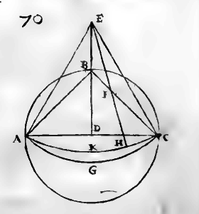

Propositio II · Theorema II¶



PROP. II. THEOR. II. (tab. 8. fig. 69, 70)
- Si ex circuli centro ad eiusdem diametrum perpendicularis excitetur, & a puncto eius, quod simul est in peripheria, lineae ad terminos eiusdem diametri perducantur, fiatque in opposito semicirculo arcus, cuius dictae lineae sint radij: Sumpto praeterea & alio quolibet puncto,
non autem circuli centro, in eadem perpendiculari; ab eo ad alterum diametri terminum recta ducatur, qua, ad partes dicti semicirculi oppositi, ceu radio, circularis linea sit ducta, vel ita secetur, vt ad eiusdem circuli semiperipheriam eandem habeat proportionem, quam quadratum radij suppositi circuli ad id eius rectae lineae, quam ab assumpto puncto deduximus; itemque ab eodem linea deducatur ad alteram facti arcus extremitatem: Procreabitur ab his rectis quoddam rectilineum spatium, sed vna cum duobus illis arcubus curuilineum aliud mixtum, quod priori aequale erit.
Sit circulus ABC, cuius diameter AC, eiusque centrum D, a quo linea ad rectos angulos erigatur supra AC; inde a puncto B, quod esse debet in sectione peripheriae, ducantur BA, BC, & centro B, interualloque altera illarum BA, BC arcus CGA describatur; sumpto autem quolibet alio puncto E iungatur EA, ad cuius interuallum, facto centro in E, intelligamus arcum AKCH descriptum, qui ad eiusdem circuli semiperipheriam eandem habeat proportionem, quam quadratum ex DA ad quadratum ex EA, tum denique iuncta EH, dico rectilineum spatium ABFE vtrique spatio aequale esse, nempe menisco GK, & circuli parti FCH, Sed fieri ipsa spatia prius ostendendum est. Iungatur CE; & quia puncta B, & E sumpsimus in perpendiculari DBE ex centro ad diametrum AC erecta patet dictos arcus AGC, AKCH per duos dictae diametri terminos C, & A transire; deinde quia triangulum DEA rectangulum est in D; atque in primo casu latus DA maius est latere DE, in secundo autem minus illo; habebit quadratum ex EA ad quadratum ex AD in primo casu minorem; at in secundo maiorem proportionem, quam angulus BDA ad angulum DEA; quam duo videlicet recti ad
f. 0081 · p. 64angulum CEA; imo quam semiperipheria circuli radij EA ad eiusdem circuli arcum CKA; sed vt idem quadratum AE ad ipsum AD, ita eadem semiperipheria circuli radij EA ad arcum HKA eiusdem circuli; ergo in primo casu eadem semiperipheria ad arcum HKA habebit minorem, at in secundo maiorem rationem, quam ad arcum CKA; & ideo in primo casu HKA peripheria maior erit, sed in secundo minor ipsa CKA, constatque propterea in illo punctum H extra, in hoc autem intra circulum ABC cadere; quod cum ita sit secabitur linea CB ab ipsa HFE; atque adeo fient proposita spatia. Hoc itaque praemisso iam quod propositum fuit ostendemus.
Quoniam recta BA dupla est potestate ipsius DA erit quadrans BCGA duplus quadrantis BDA; verum eiusdem quadrantis BDA duplus est etiam semicirculus CBA; quadrans igitur BCGA aequalis est semicirculo CBA; verum quia quadratum DA ad quadratum AE, videlicet semicirculus CBA ad semicirculum radij AE eandem habet proportionem, quam arcus HKA ad semiperipheriam circuli eiusdem arcus; quam videlicet sector EHKA ad semicirculum eiusdem sectoris, erit semicirculus CBA, quadrans videlicet BCGA aequalis sectori EHKA; quod si commune auferatur spatium, remanebit ipsum FBAE, quod rectilineum est, aequale vtrique & menisco GK, & spatio FHC, quod &c.